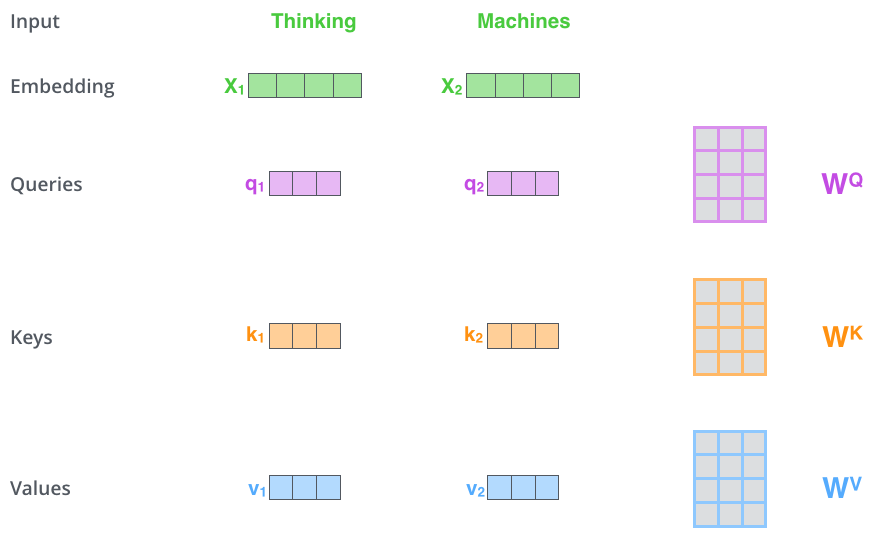
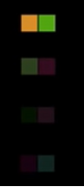

Self-Attention
Contents
Self-Attention#
The animal didn't cross the street because it was too tired
위 문장을 예시로 self-attention이 이루어지기 전 Tokenizing, Embedding이 수행된다.
1. self-attention?#
self-attention은 Query(Q), Key(K), Value(V) 간의 관계를 추출한다. Q, K, V는 입력 문장의 모든 벡터 값이며 모두 동일하다.
2. Q, K, V?#
어떤 입력 단어 벡터 시퀀스에 어떤 trainable한 행렬 \(W_Q, W_K, W_V\) 이 곱해지면서 Q, K, V가 만들어진다.
예를 들어 입력 단어가 \(X_1\) = “Thinking”, \(X_2\) = “Machines”라면 다음과 같이 \(W_Q, W_K, W_V\)가 곱해지면서 각각 (\(q_1, k_1, v_1\)), (\(q_2, k_2, v_2\))가 만들어진다.

3. \(\frac{QK^T}{\sqrt{d_k}}\)#
\(QK^T\)는 Q와 K간의 연관성을 계산하여 score를 출력한다. 위 문장을 예시로 다음과 같이 연산된다.
\(The\) · \(The^T\) \(The · animal^T\) \(The · didn't^T\) \(The · cross^T\) \(The · the^T\) \(The · street^T\) \(The · because^T\) \(The · it^T\) \(The · was^T\) \(The · too^T\) \(The · tired^T\) \(animal · The^T\) \(animal · animal^T\) \(animal · didn't^T\) …
이처럼 “The”의 Q에 대한 각 전체 단어 K간의 연관성이 얼마나되는지 score를 계산하고 “animal”도 마찬가지로 계산하는 식으로 진행된다.
\(\sqrt{d_k}\)에서 \(d_k\)는 key 벡터 사이즈를 의미하여 이 값을 나누어주는 이유는 key 벡터의 차원이 늘어날수록 내적 연산시 값이 커지는 문제를 보완하기 위해서이다. 또한 더 안정적인 gradient를 가지기위해서라고 한다.
이후 각 score들은 softmax를 거쳐 0~1 사이의 값으로 만든다.
4. \(softmax(\frac{QK^T}{\sqrt{d_k}})V\)#
softmax까지 거친 score들은 또 V와 곱해진다.
\(softmax(The(Q) · The^T(K)) · The(V)\) \(softmax(The(Q) · animal^T(K)) · animal(V\)) \(softmax(The(Q) · didn't^T(K)) · didn't(V)\) \(softmax(The(Q) · cross^T(K)) · cross(V)\) \(softmax(The(Q) · the^T(K)) · the(V)\) \(softmax(The(Q) · street^T(K)) · street(V)\) \(softmax(The(Q) · because^T(K)) · because(V)\) \(softmax(The(Q) · it^T(K)) · it(V)\) \(softmax(The(Q) · was^T(K)) · was(V)\) \(softmax(The(Q) · too^T(K)) · too(V)\) \(softmax(The(Q) · tired^T(K)) · tired(V)\) \(softmax(animal(Q) · The^T(K)) · The(V)\) \(softmax(animal(Q) · animal^T(K)) · animal(V)\) \(softmax(animal(Q) · didn'^Tt(K)) · didn't(V)\) …
이렇게 각 score가 V와 곱해지면서 Q와 K의 연관성이 V에 반영된다. 쉽게 말해 Q와의 연관성이 큰 K는 중요도가 클 것(score가 높음)이고 연관성이 작은 K는 중요도가 작을 것(score가 낮음)인데 이것이 V에 반영된다는 것이다.
그림으로 표현했을때 score가 크면 다음과 같이 맨 위처럼 선명하고 score가 낮을수록 아래에 있는 것처럼 희미해진다.

마지막으로 각 V는 sum이 되어 각 Token의 의미에 해당하는 값을 얻게된다. 예를 들어 “The”에 해당하는 모든 V를 더하면 전체 문장에서 “The”의 의미를 가지는 벡터를 얻게 된다.
[Reference]
Author by 김주영
Edit by 김주영